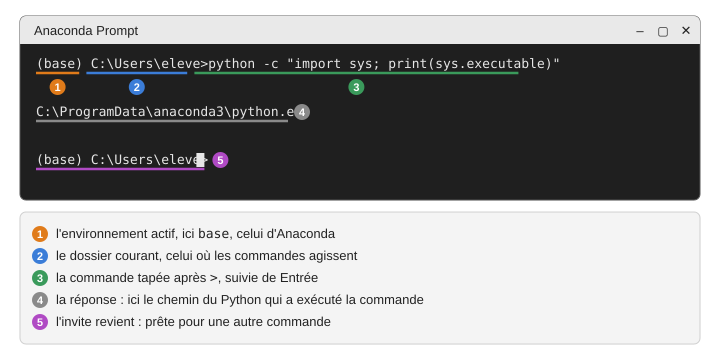
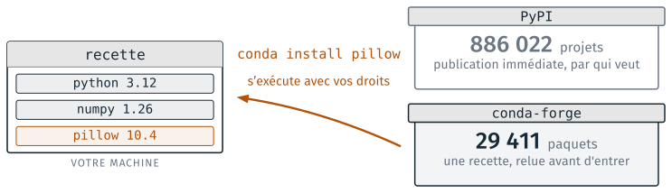

Anaconda#
Anaconda est une distribution Python : un ensemble qui réunit Python, des
centaines de bibliothèques déjà installées, l’outil conda qui gère les
environnements, et des applications (Anaconda Navigator, Spyder,
JupyterLab). Sur les postes de la salle, il est installé pour tous les
utilisateurs, dans C:\ProgramData\anaconda3.
Anaconda se lance de deux façons : par une interface graphique, Anaconda Navigator, ou en ligne de commande, l’Anaconda Prompt. Les deux donnent accès aux mêmes applications et au même Python. Le test des deux est dans Anaconda, JupyterLab et VS Code.
{kind=link}
{kind=link}
Lancer l’Anaconda Prompt#
Menu Démarrer, taper anaconda, choisir « Anaconda Prompt ». Une fenêtre
noire s’ouvre tout de suite. La ligne qui attend une commande s’appelle
l’invite ; elle commence par (base), le nom de l’environnement actif, puis
le dossier courant.
{kind=link}

Une commande tapée dans l’Anaconda Prompt, et sa réponse.#
Chaque application se lance en tapant son nom, puis Entrée :
Application |
Commande |
Détail |
|---|---|---|
JupyterLab |
|
|
Spyder |
|
|
VS Code |
|
|
Anaconda Navigator |
|
L’application démarre avec l’environnement actif dans la fenêtre, celui qu’indique l’invite. La fenêtre de l’Anaconda Prompt reste ouverte pendant que l’application est ouverte ; elle affiche ce que l’application écrit, et une erreur de démarrage s’y lit.
Les environnements#
Un environnement est un dossier qui contient un Python et les paquets
installés avec lui. base est celui d’Anaconda. Sur les postes de la
salle, son dossier n’est pas modifiable par un compte élève : on n’y
installe rien. Chaque TD qui a besoin d’un paquet crée son propre
environnement, qui va dans C:\Users\<nom>\.conda\envs. Le TD 4a fait
créer le premier ; les commandes, dans l’Anaconda Prompt :
conda create -n recette -c conda-forge python pandoc
conda activate recette
conda env list
conda list -n recette
Dans l’ordre : créer l’environnement recette avec Python et pandoc, pris
sur le canal conda-forge ; l’activer (l’invite passe à (recette)) ; lister
les environnements connus ; lister les paquets de recette. Ce que
change l’activation est expliqué dans
Les environnements conda.
Documentation officielle#
Anaconda Navigator : Getting started with Navigator (en anglais).
Anaconda Prompt et conda : Getting started with conda (en anglais).
Configuration des dépôts#
Un paquet installé par conda vient d’un dépôt, un serveur qui en tient
des milliers à disposition. conda appelle ces dépôts des canaux
(channels). Il en existe plusieurs : conda-forge, tenu par une
communauté, où chaque paquet entre après relecture d’une recette ; les
canaux d’Anaconda (defaults, c’est-à-dire pkgs/main et pkgs/r),
tenus par l’entreprise, avec des conditions d’utilisation ; et PyPI, le
dépôt de pip, que conda n’emploie pas. Le réglage des canaux dit à conda
où chercher, et dans quel ordre.
{kind=link}

Un environnement, et les dépôts d’où viennent ses paquets (schéma du cours 1).#
Le module prend ses paquets sur conda-forge, d’où le -c conda-forge des
commandes. Deux réglages, à faire une fois par compte dans l’Anaconda
Prompt, rendent ce choix permanent et évitent les questions que conda
pose sinon.
Canal conda-forge par défaut#
Écrire dans le fichier C:\Users\<nom>\.condarc (le créer avec le
Bloc-notes s’il n’existe pas ; le nom commence par un point et n’a pas
d’extension) :
channels:
- conda-forge
channel_priority: strict
Avec ce fichier, conda create -n recette python pandoc prend tout sur
conda-forge, sans -c, et les canaux d’Anaconda ne sont plus consultés,
y compris quand c’est VS Code qui lance conda create
(Comment VS Code gère les environnements).
Vérifier : conda config --show channels affiche conda-forge seul.
Conditions d’utilisation des canaux d’Anaconda#
Depuis Anaconda 2025.06, conda demande une fois par compte d’accepter les conditions d’utilisation des canaux d’Anaconda avant de s’en servir (A10). La question n’est posée que dans un terminal ; lancé par VS Code, conda ne peut pas la poser et échoue. Faire le test une fois, dans l’Anaconda Prompt :
conda tos
La réponse est un tableau des canaux avec, pour chacun, accepté ou non. S’il reste des canaux non acceptés et qu’on compte s’en servir :
conda tos accept
Avec le fichier .condarc ci-dessus, les canaux d’Anaconda ne sont plus
consultés et la question ne se pose plus.
Fichiers utiles#
Quoi |
Où |
|---|---|
Installation |
|
Python de |
|
Script qu’exécute l’Anaconda Prompt |
|
Environnements créés par le compte |
|
Liste des environnements connus |
|
Réglages de conda pour le compte (canaux) |
|
Réglages et journaux de Navigator |
|
conda info, dans l’Anaconda Prompt, affiche ces chemins tels que conda
les voit.